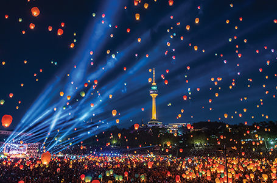
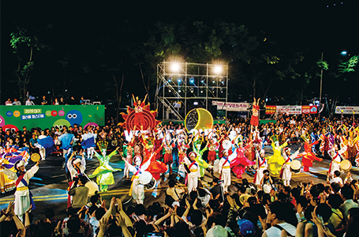

품격있는 문화도시
- Home
- 투자강점
- 대구만의 투자강점
- 품격있는 문화도시
품격있는 문화도시
수준 높은 문화, 환경도시
다양한 국제대회 및 국제회의 유치
- 2002 월드컵경기, 2003 하계유니버시아드 성공리에 개최
- 2005 국제회의도시 지정
- 2010 세계소방관대회, 2011 세계육상선수권대회, 2012 세계곤충학회, 2013 세계에너지총회 유치
대구전시컨벤션센터(Daegu Exhibition &Convention Center)
- 전시장 가동률 포화상태로 확장공사 중(‘11.5월 개관)
- 위치 : 대구광역시 북구 산격동1678번지(종합유통단지 내)
- 규모 : 대지 20,862㎡(연건평 88,310㎡), 지상5층, 지하4층
- 전시장 11,616㎡(컨벤션홀 3,872㎡ 포함), 회의실 12개(분할시 20개), 연회실 1,223㎡(600명, 7개 회의실로 분할가능)


※ 2010년 전시장 연간 가동률을 보면 대구 EXCO가 70％로 실질적으로 포화상태로 나타내고 있음. 대구시는 전시장 공급부족을 해소하고, 대구경북지역 거점도시로서 전시컨벤션산업의 균형발전을 도모하기 위해 현재 EXCO 확장 중임. 확장규모는 대지 22,152㎡(연건평 57,642㎡), 지상1~5층, 지하2층으로(전시장 11,100㎡, 회의실 1,800㎡, 오디토리움 2,000㎡, 부대시설 42,742㎡)
국내전시장 현황(’10)
| KINTEX (고양) |
COEX (서울) |
BEXCO (부산) |
EXCO (대구) |
KDJ센터 (광주) |
CECO (창원) |
|
|---|---|---|---|---|---|---|
| 전시면적(㎡) | 53,541 | 36,007 | 26,508 | 11,616 | 9,073 | 7,827 |
| 가동율(％) | 58 | 70 | 55 | 70 | 70 | 50 |
※ 대구EXCO 가동율: ′03(70％), ′04(72％), ′05(68％), ′06(70.3％), ′07(72.2％), ′08(73％), ′09(67％)
저탄소 녹색선도도시 육성
- 세계에너지총회(WEC) 유치 계기로 "Solar City"프로젝트(2010년부터 5개년 계획)추진
- 지속적인 친환경이미지 구축, "기후환경 모범택시"브랜드화
- 경북도와 공동으로 탄소배출권거래소, 온실가스 감축실적등록소 공동유치 등
다양한 문화행사
- 다양한 지역축제 : 국제오페라축제, 국제뮤지컬축제(DIMF), 한방축제, 섬유축제(PID)
- 전국최초 한방특구지정 : 350년 전통의 약령시 및 약전골목

